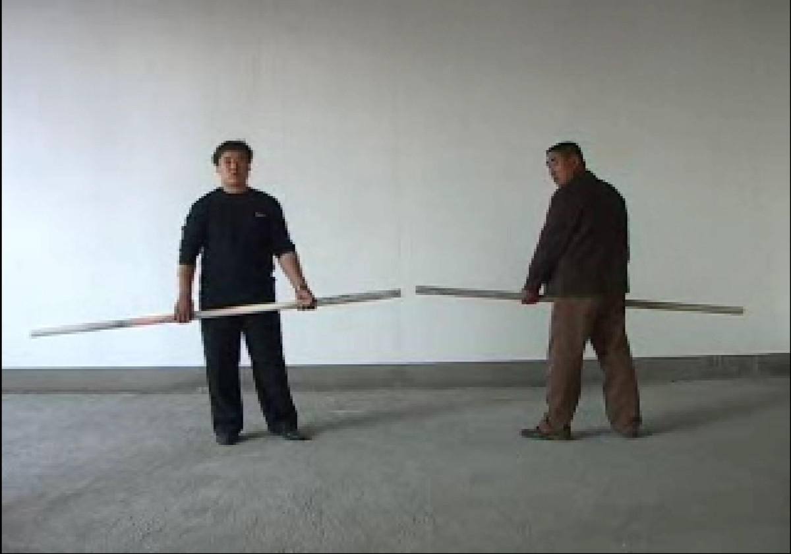

石玩玩 | PLAY STONE
行为、图片和现场录像，石棍直径5cm，长2m+2m，录像时长59分30秒，彩色有声单屏幕，可变尺寸，2005
Performance, Photographs, Archival inkjet print, Video, 59`30``, Single-channel\Color\Sound, Variable, 2005
两人将一根断开的石棍对接，直到精疲力竭。
Two individuals join the two broken halves of one rock stick into one by hand until they ran out of their strength.
第一次对玩玩有印象，是2005年10月在后现代城的“一万年”展览上。他的作品是一根4米长，被用车床车的很光滑的一根直径有7、8厘米的、带有蓝白和肉色花纹的大理石石柱（确切说应该是石棍），中间断开来，断口留有新茬。作品要求两个民工双手握着这根断开的石棍，尽量端平端直将断茬対准在一起，像两个人共同端着一根没有断开的石棍。现场两个人就这样端着，直到力气和耐心用光，石棍的断茬对不准。人不是机器，总有力气用尽的时候，而且两个人也很难平衡对方的着力点，几乎是一开始就不断出现断茬松动，然后是错动，同时石棍开始高低不平左右不直。我当时看出来，玩玩的作品着力点与雕塑家不同，瞄准的是端着石棍——被要求尽量将断茬对准的两个人的努力。因此这件作品就被玩玩自己命名为《石玩玩》。——隋建国
My first impression of Shi Wanwan was created on an exhibition entitled “Ten Thousand Years” which was held in October 2005 in the Post-modern City. The work presented by him at that exhibition was a 4m long rock stick, with a diameter of 7-8cm. The stick had already been lathed, showing blue and white and incarnadine patterns on the body. It was broken in two halves, resulting in raw edges at the fractures. Two workmen were asked to catch the two broken halves as level as possible, as if the stick were intact, until their strength and patience ran out. As the strength of human body cannot last such a long time as the machine does, and it was too difficult for the two men to keep the two halves aligned, the sticks were unsteady from the beginning and gradually became worse. I realized at the exhibition that, unlike sculptures, Shi Wanwan’s work highlighted the efforts made by the two workmen holding the sticks to keep them aligned. Therefore, this work was called Play Stone. ——Sui Jianguo
后现代城，北京
Post- Contemporary City Beijing, Beijing

后现代城，北京
Post- Contemporary City Beijing, Beijing